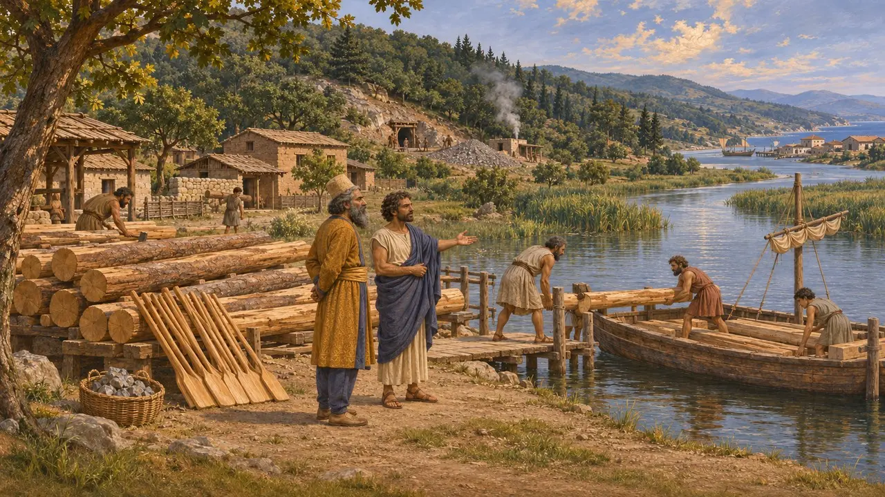
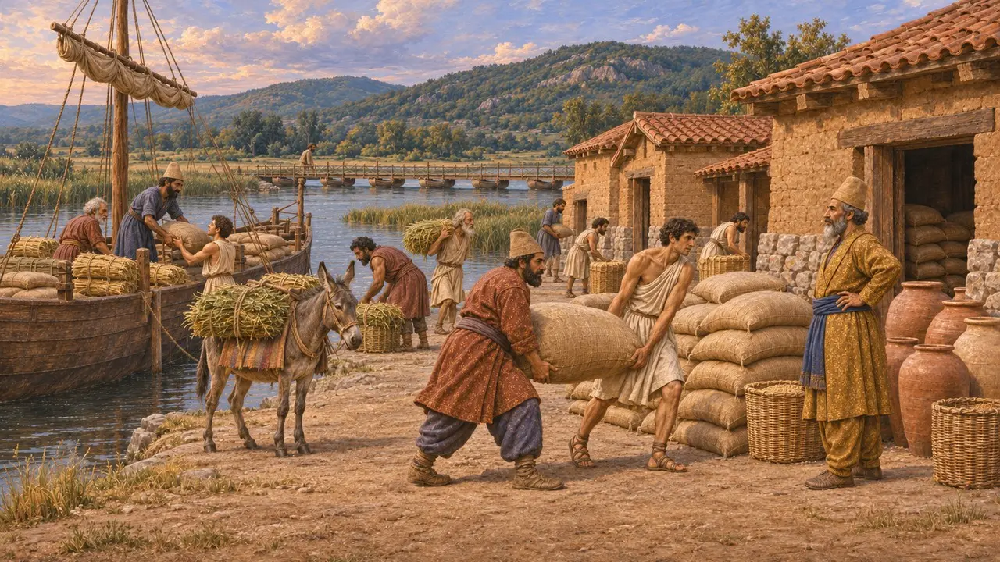
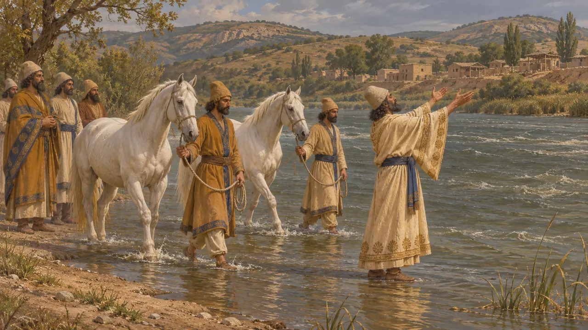
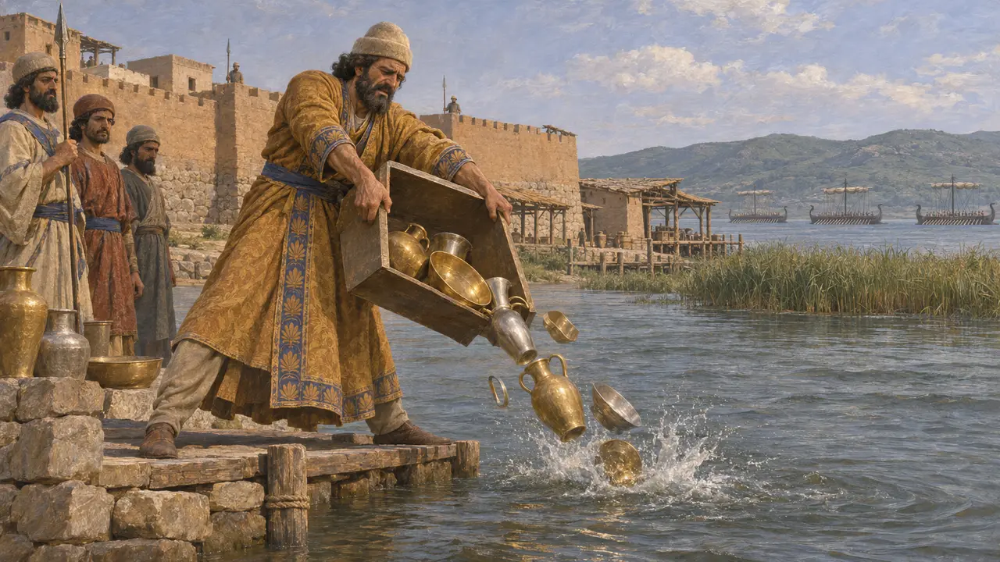
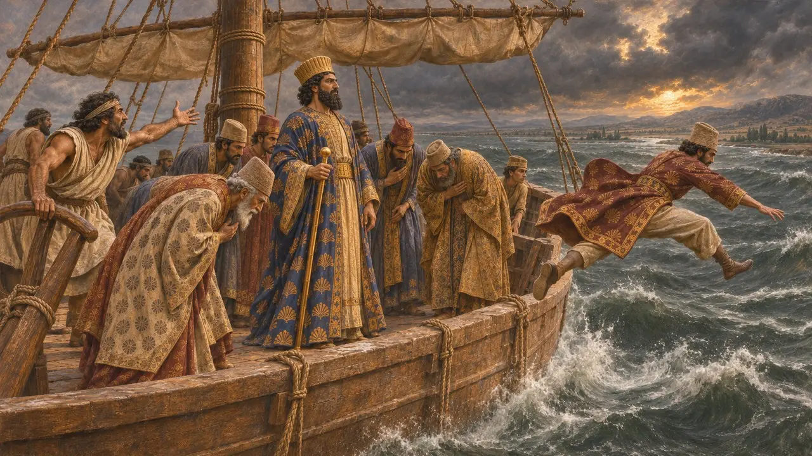

ایون و استریمون
بندر و پایگاه آذوقهٔ در دست پارسیان بر دهانهٔ رود استریمون، تراکیه، حدود 512 تا 476 پ.م.
در بازی: مرحلهٔ ۹: آبراهه
ایون شهری بازرگانی در دهانهٔ رود استریمون در تراکیه بود، بر سر راه ساحلی که از هلسپونت به سوی مقدونیه و یونان میرفت. خشایارشا برای لشکرکشی سال 480 در آن آذوقه انبار کرد، و پس از شکست در یونان، پادگانی پارسی آن را نگه داشت تا آنکه آتنیان به فرماندهی کیمون در حدود 476 آن را گرفتند.
در بازی: بازی ائیون را انبار آذوقهٔ خشایارشا بر کرانهٔ رود استریمون، در راه یونان، نشان میدهد. این با گفتهٔ هرودوت همخوان است که ائیون را از جمله انبارهایی نام میبرد که پیش از لشکرکشی از آذوقه پر شدند.

الوار، نقره و سرزمین ادونیها
روایت باستانیهرودوت میگوید قدرت پارسی پس از لشکرکشی مگابازوس به تراکیه به فرمان داریوش، در حدود سال 512، به استریمونِ سفلی رسید. داریوش شهرک ادونیِ میرکینوس را در همان نزدیکی به هیستیائوس میلتوسی بخشید. به روایت هرودوت، مگابازوس به شاه هشدار داد که آن ناحیه الوار کشتیسازی، چوب پارو و کانهای نقرهٔ فراوان دارد و نباید گذاشت یونانی زیرکی در آنجا قدرت بیندوزد.
Herodotus 5.11; 5.23

آذوقه برای لشکرکشی به یونان
روایت باستانیهرودوت میگوید که در حالی که آبراههٔ آتوس کنده میشد، خشایارشا فرمان داد بر استریمون پل بزنند. او همچنین دستور داد خوراک مردان و چارپایان را از سراسر آسیا به انبارهایی بر سر راه بیاورند. هرودوت از دماغهٔ سفید، تیرودیزا، دوریسکوس، ائیون بر کرانهٔ استریمون و جاهایی در مقدونیه نام میبرد. هیچ سندی از خود انبار ائیون بر جای نمانده است.
Herodotus 7.24-25

قربانی در نُهراه
مورد مناقشههرودوت میگوید مغان اسبانی سپید برای رود استریمون قربانی کردند، و در نهراه، گذرگاهی در بالادست ائیون، پارسیان نه پسر و نه دختر از مردم بومی را زنده به گور کردند. او زنده به گور کردن را رسمی پارسی میخواند. لوحهای تخت جمشید بهراستی از نذورات به رودها یاد میکنند، اما بسیاری از مورخان در این قربانی انسانی، که هیچ منبع پارسی آن را تأیید نمیکند، تردید دارند.
Herodotus 7.113-114; W. Henkelman, The Other Gods Who Are, 2008

بوگس و محاصرهٔ آتنیان
روایت باستانیتوسیدید میگوید اتحادیهٔ تازه به رهبری آتن، به فرماندهی کیمون، ائیون را در حالی که هنوز در دست پارسیان بود محاصره کرد، آن را گرفت و مردمش را به بردگی برد، احتمالاً در حدود سال 476. هرودوت میگوید فرمانده آن، بوگس، تن به تسلیم نداد، خانوادهاش را کشت، زر و نقرهاش را به رود استریمون افکند و بر تودهٔ هیزم جان سپرد. هرودوت میافزاید که خشایارشا او را ستود و پسرانش را گرامی داشت.
Thucydides 1.98; Herodotus 7.107; Plutarch, Cimon 7

سفر دریایی خشایارشا از ایون
افسانهٔ متأخرهرودوت داستانی نقل میکند که خشایارشا هنگام بازگشت در 480 با کشتیای فنیقی از ائیون رهسپار شد. در توفانی سکاندار گفت باید بار کشتی را سبک کرد، و بزرگان پارسی در برابر شاه کرنش کردند و خود را به دریا افکندند. خود هرودوت این داستان را نمیپذیرد و میگوید خشایارشا از راه خشکی به هلسپونت بازگشت.
Herodotus 8.118-120
منابع
- Herodotus 7.24-25, 7.107, 7.113-114, 8.118-120
- Thucydides 1.98
- Herodotus 5.11, 5.23
- Plutarch, Cimon 7
- P. Briant, From Cyrus to Alexander, 2002
- W. Henkelman, The Other Gods Who Are, 2008